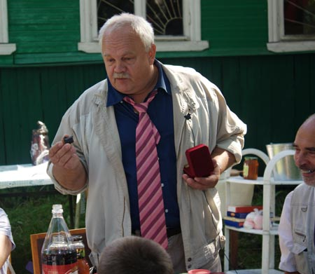

Тюлькин Виктор Аркадьевич, первый секретарь Центрального комитета Российской коммунистической рабочей партии.
Михаил Васильевич значительно облегчил мне задачу, теперь можно будет уложиться в полчаса. Хорошо, что торопиться не надо и можно повспоминать, обобщить, какие-то выводы сделать.
Нельзя назвать какой-то определенный день — вот день рождения «Народной правды». Конечно, это процесс, и это рождение происходило в борьбе. В борьбе тех тенденций и тех людей, о которых вспоминал Михаил Васильевич, в борьбе классов, в конце концов.
Вспоминаю одно из событий, «виновницей» которого стала «Народная правда». Когда Бакатина, друга Горбачева, бывшего председателя КГБ СССР спросили на десятилетии перестройки: как вы думаете, где была ваша главная неудача, в чем она заключалась? Он, подумавши, ответил примерно так: знаете, самая большая наша неудача состояла в том, что мы не сумели плавно подменить программные ценности КПСС на вполне социал-демократические. У них цель была — капитализм под красным знаменем, с правящей партией и прочее, прочее. Не получилось. И одна из существенных помех здесь — «Народная правда», компартия России, та научная школа антирыночников, о которой Михаил Васильевич подробно рассказывал.
И вспоминая те события, дни, хотелось бы обратить внимание, что рождение газеты происходило вопреки номенклатуре, которая кто — сознательно, от души, кто — подневольно, но проводила контрреволюционную линию. Политбюро, что ещё называли «ленинским», гнало на рынок, на «социализм с человеческим лицом» и так далее. А вот сопротивление контрреволюции шло с низов, и появлялись люди — и рядовые, и остепененные, и даже некоторые номенклатурные деятели.
Был такой случай. Перед подготовкой Учредительного съезда Компартии РСФСР мы пробивали приглашение на съезд рабочих. Сто человек, минимум, мы требовали и в Москву ездили, и был у нас такой Самряков Степан Степанович, такой колоритный, здоровый, абсолютно лысый, с громовым голосом. И ходил этот Степан Степанович на прием к товарищу Манаенкову, секретарю ЦК КПСС и со свойственной ему прямотой рабочей резал: в стране идет измена, в стране нарастают частнокапиталистические тенденции, дело рабочего класса находится под угрозой гибели! А тогда в аппарате была такая мода — у всех на столах стояли стаканы с остро отточенными карандашами, красивые такие. И вот этот Манаенков сидит, он себя сдерживает, но карандаш — раз, у него, один сломан, второй, потом третий. А потом его секретарь рассказывает. Ушёл Самряков, Манаенков сидел-сидел, сломал последние три карандаша и говорит: вообще-то он прав.
Шестого августа, по-моему, 1991 года был Пленум ЦК КП РСФСР, мы туда привезли первый номер «Народной правды». До ГКЧП оставалось несколько дней. Именно тогда подал в отставку Полозков, уже здорово истрепанный, уставший, со всех сторон на него, как собаки, «демократические» СМИ бросались — кузьмич, кузьмичи, кузьмичи ползут… И встал вопрос: а кого? В те времена неплохой репутацией пользовался Геннадий Андреевич Зюганов, поскольку он, во-первых, был близок ко всякого рода патриотическим кругам, к журналу «Молодая гвардия», во-вторых он выступил с письмом «архитектор у развалин», хотя Яковлев в те времена был уже никем. И вот мы Зюганова поддержали, а сверху предложили товарища Купцова. Был объявлен перерыв. И вот после этого перерыва, очевидно, поимев беседу с Горбачевым, Геннадий Андреевич выходит на трибуну, переминается, краснеет, потеет и говорит, мол, у меня и опыта-то маловато, и я плохо знаю промышленность, и я никогда не руководил реальными производственными процессами, меня недостаточно в кругах руководителей знают… Короче, со всех сторон Купцов более подходящая фигура, и поэтому я снимаю свою кандидатуру.
Это я все к чему — сегодня уже историю переписывают, особенно те, кто более-менее наверху, парламентское положение занимает. И тот же Зюганов, когда мы с ним выясняем отношения, как герой выступает: да как же ты можешь, Аркадьич, да ведь я, я пробил газету «Народная правда», я лично перечислил вам 300 тыс. рублей, я добился, чтобы 200 тонн бумаги газетной вам отправили. И это при всем том, что Михаил Васильевич абсолютно правильно говорил, что тормозили, как могли. И пришлось Долгову, который всегда изобретательностью отличался, шапку — и где только он в августе такую нашел, чуть ли не ушанка, по кругу пускать. Бросаем по четвертному, по 50 рублей — сколько у кого есть. Прижали их задницей к стенке, чтобы отступать некуда было.
Именно на этом Пленуме отвел меня, я помню, покойный Шенин в сторону и попросил: вы знаете, вы не обижайтесь, не расстраивайтесь, что не получается у вас сейчас пробить то, чего вы хотите, — мы тогда думали и на секретаря продвинуть Долгова, и в Политбюро кого-нибудь провести, развить наступление, — но вы подождите, я вам не могу сказать всего, но скоро будут события и будут большие изменения. Эти события и изменения вылились в то, что потом было названо «ГКЧП».
Здесь я хотел бы остановиться не столько на деталях, сколько на общем моменте. По большому счету ГКЧП выступил в своих заявлениях и обращениях за те же ценности, что и Горбачев. Они, правда, сказали, что в стране непорядок, есть угрозы и опасности, надо навести порядок и так далее, но у них — тот же «социализм с человеческим лицом», те же рыночные ценности, «продолжим курс реформ» и прочее и прочее. Безусловно, там были честные, порядочные люди, и я никогда камень не брошу в Варенникова Валентина Ивановича, Стародубцев тоже по-своему честный был. Но когда нет верных ориентиров, люди даже с благими побуждениями вольно или невольно сбиваются на ту же тропинку. Победил бы ГКЧП — курс был бы тот же, только, может, под красным знаменем дольше бы шли — потом люди больше плевались бы, куда партия завела. Это я к тому, что то направление, которое вела и ведет «Народная правда», те люди, которые с ней связаны, движения, партии, и РКРП — они отличаются тем, что это направление является научно выверенным, значит — правильным и всесильным потому, что оно верно.
Напоследок я хотел бы сказать вот что. Есть части нашего движения, есть и научно выверенные, и политически правильные. Но есть и ещё один очень важный, моральный момент, дух, что ли. Бывают в жизни ситуации, когда никакие умные советы не нужны и никто их уже не может дать, и когда надо только держать напряжение. И вот как символ этой стойкости, как символ умения выполнять вот эту функцию, которая должна быть присуща всем, начиная от вождей и заканчивая рядовыми бойцами — на флоте от матроса и до адмирала — вот как этот символ я хочу подарить коллективу редакции, газете «Народная правда» вот эту заклепку с борта крейсера «Аврора». Выполняйте свою функцию, как выполняет эта заклепка — держать и ничего больше. Причем держать во чтобы то ни стало, как бы трудно ни было, потому как, если один элемент сдаст, за ним другой, посыпется весь шов и потом уже, может, никакие героические усилия не спасут положения. Поэтому дарим от ЦК РКРП в знак уверенности, что будем стоять.
|
|
|